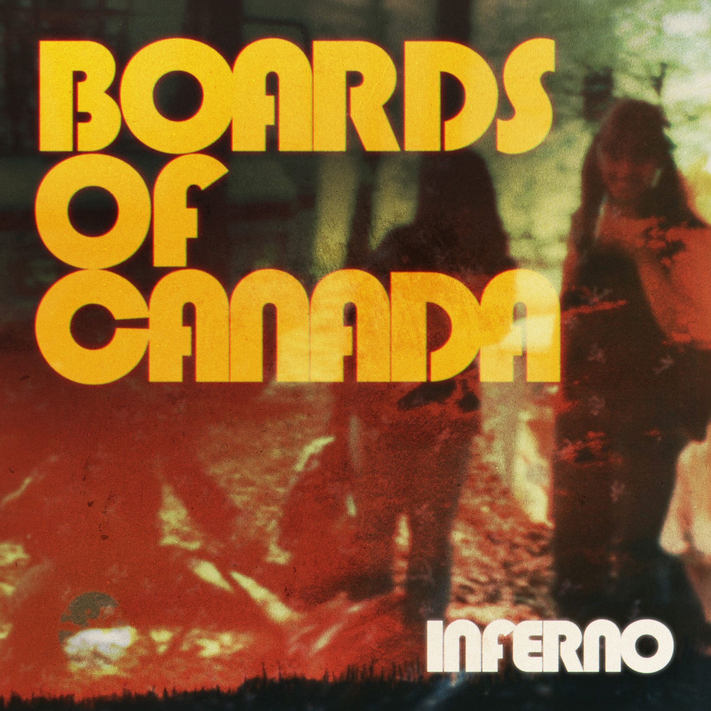

The Darts + Tasha B & The Queenmakers
Le Tetris · Rock garage
Évènement à Le Havre par Le Tetris et 2 autres personnes le mercredi, mai 31 2023 avec 142 personnes intéressées et 41 personnes qui y participent. 5 publications dans la discussion.